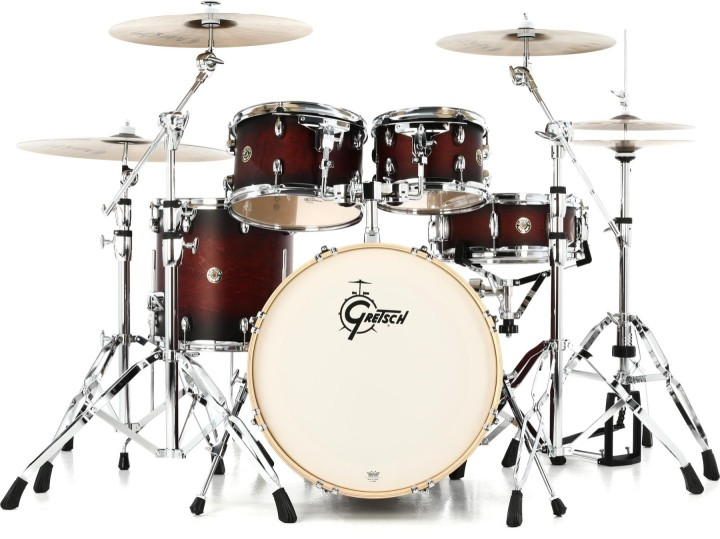

A ride cymbal is a fundamental component of a drum kit, essential for creating rhythm and texture in various music genres, particularly in rock, jazz, and more. ]
It is a large, round, and typically thicker cymbal with a bright, sustained sound.
Drummers strike it with a drumstick or mallet to produce a clear and defined "ping" or "wash" sound that can be used for maintaining a steady beat, adding accents, or creating intricate patterns.
Its versatility makes it a central element in drumming, allowing drummers to explore dynamics and expressiveness while maintaining a steady groove in a wide range of musical contexts.
Medium toms, often referred to as "mid-toms," are essential elements of a drum kit, contributing to its sonic versatility.
These mounted drums, typically situated between the smaller rack toms and the larger floor toms, come in various sizes, usually ranging from 10 to 14 inches in diameter.
They offer a balanced and warm tonal range, making them suitable for both fills and rhythmic patterns.
Medium toms are commonly used by drummers to add depth and complexity to their beats, creating a sense of progression and excitement.
Their placement and tuning enable seamless transitions between different tom sizes, enhancing the drummer's ability to craft intricate and dynamic rhythms across diverse musical genres.
The high tom, also known as the "hi-tom" or "high mounted tom," is a fundamental component of a drum kit, providing a distinct tonal character and dynamic range.
Typically perched above the medium and floor toms, hi-toms come in various sizes, usually ranging from 12 to 18 inches in diameter.
They produce higher-pitched tones compared to their larger counterparts, adding brightness and clarity to a drummer's arsenal.
Hi-toms are frequently employed to create intricate fills, accents, and melodic patterns in drumming performances.
Their strategic placement and tuning allow drummers to craft intricate and expressive rhythms,
making them a crucial element in shaping the overall sound and musicality of the drum kit.
The floor drum, also known as a "floor tom," is an integral part of a drum kit, contributing depth and resonance to the overall sound.
Positioned on the floor, typically to the right of the drummer, floor toms are larger than rack and hi-toms, with sizes ranging from 14 to 18 inches in diameter.
These drums produce deep, thunderous tones that add a rich low-end presence to a drummer's repertoire.
Floor toms are essential for creating impactful grooves, powerful accents, and dramatic fills in various music genres.
Their size and placement allow drummers to establish a solid foundation while adding dynamic flair to their rhythm sections,
making floor toms an essential component of any drum kit.
The snare drum is the heartbeat of a drum kit, renowned for its sharp and versatile sound.
Positioned between the drummer's knees, it typically measures 13 to 14 inches in diameter
and features a set of tightly wound metal wires called "snares" stretched across the bottom head.
When struck with drumsticks, the snare produces a crisp, staccato sound that provides the rhythmic backbone of a musical piece.
Its distinctive sound is used for accents, backbeats, and complex patterns, serving as a core element in various music genres,
from rock and pop to jazz and marching bands.
The snare's unique timbre and responsiveness make it an indispensable tool for drummers, driving the groove and adding depth to compositions.
The crash cymbal is a fundamental component of a drum kit, prized for its explosive and dramatic sound.
It consists of a thin, round metal plate suspended on a stand, ranging in size from 14 to 20 inches or more.
Drummers strike it with drumsticks, mallets, or their hands to produce a powerful, shimmering crash that cuts through the music.
Crash cymbals are often used for emphasis, signaling transitions, and adding intensity to musical passages.
Their characteristically bright and dynamic tone makes them ideal for creating climactic moments in a wide range of musical genres,
from rock and metal to orchestral and jazz performances.
The hi-hat cymbal is a vital element in a drum kit, recognized for its versatile and rhythmic capabilities.
Comprising a pair of cymbals mounted on a stand, the hi-hats can be operated with a foot pedal to control their openness and closure, creating a spectrum of sounds.
Drummers use them to establish the foundational beat, keeping time with a crisp and defined "chick" sound when closed and adding a shimmering, sustained wash when opened.
Hi-hats are crucial for groove, dynamics, and accenting patterns in various musical genres, from jazz and funk to rock and pop.
Their expressive qualities make them an indispensable component in shaping the feel and texture of drumming performances.
The bass drum, often referred to as the "kick drum," is the thunderous heartbeat of a drum kit.
It's the largest drum in the setup, typically positioned on the floor and played with a foot pedal.
Measuring from 18 to 24 inches in diameter, the bass drum produces deep, resonant low-frequency thuds that provide the rhythmic foundation of a musical piece.
Drummers use it to establish the pulse, driving the groove with each powerful kick.
In various music genres, from rock and metal to dance and hip-hop, the bass drum's commanding and pulsating sound adds weight, power, and momentum,
making it an essential component in creating a compelling and dynamic rhythm.

History: Drums have a rich history dating back thousands of years.
They are among the oldest musical instruments, with origins in Africa, Asia, and the Americas.
Ancient drums were made from natural materials like animal skins and hollowed logs, used for communication, rituals, and celebrations.
Over centuries, they evolved into diverse forms, from African djembes to Asian taiko drums.
Drums played a crucial role in military communication and became central to various music genres, including jazz, rock, and pop.
Advancements in materials and technology have led to modern drum kits with various components.
Today, drums remain a vital element of global music and culture.